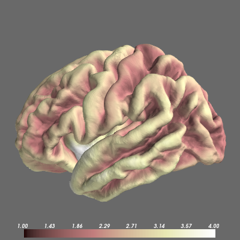

Display morphometry files generated during the cortical reconstruction process.
Python source code: plot_morphometry.py
print __doc__
from surfer import Brain
brain = Brain("fsaverage", "lh", "pial",
config_opts=dict(background="dimgray"))
"""
Because the morphometry files generated by
recon-all live in a predicatble location,
all you need to call the add_morphometry
method with is the name of the measure you want.
Here, we'll look at cortical curvatuve values.
"""
brain.add_morphometry("curv")
"""
Each of the possible values is displayed in an
appropriate full-color map, but you can also
display in grayscale.
"""
brain.add_morphometry("sulc", grayscale=True)
"""
The Brain object can only hold one morphometry
overlay at a time, so adding a new one removes
any existing overlays.
"""
brain.add_morphometry("thickness")